1º DAW - Programación - UT 9
Orientaciones
Orientaciones
Esta unidad de trabajo vamos a aprender los conceptos de creación de interfaces de usuarios gráficos (GUI) de forma introductoria.
Es necesario el conocimiento de las unidades anteriores.
9.1. Introducción
Qué es la interfaz de usuario
La interfaz de usuario es el espacio donde se producen las interacciones entre seres humanos y máquinas. El objetivo de esta interacción es permitir el funcionamiento y control más efectivo de la máquina desde la interacción con el humano. Las interfaces básicas de usuario son aquellas que incluyen elementos como menús, ventanas, contenido gráfico, cursor, los beeps y algunos otros sonidos que la computadora hace, y en general, todos aquellos canales por los cuales se permite la comunicación entre el ser humano y la computadora. El objetivo del diseño de una interfaz es producir una interfaz que sea fácil de usar (explicarse por sí misma), eficiente y agradable para que al operar la máquina dé el resultado deseado
La interfaz de usuario es el entorno de interacción persona-ordenador, la interfaz (o interfaz de usuario) es lo que permite que la interacción entre persona y ordenador ocurra. Es decir, la interfaz permite:
- Que la persona pueda controlar efectivamente las acciones de la máquina.
- Que la persona reciba respuestas de la máquina que le permitan saber si la interacción es correcta y cómo seguir actuando.
Por lo tanto, el diseñador de la interfaz se tiene que asegurar de que el proceso de interacción se puede efectuar de manera fácil e intuitiva y que la persona (a la que llamaremos de ahora en adelante usuario) puede acceder a la información o ejecutar las acciones que desea, de la manera más simple posible. Así, el diseño de interfaces implica conocimientos de disciplinas muy variadas, como por ejemplo, la psicología o el diseño visual.
En muchas ocasiones, la palabra interfaz se refiere en realidad a un concepto mucho más específico: la interfaz gráfica de usuario (GUI del inglés graphical user interface). La GUI es el entorno visual en el que se desarrolla la interacción entre la persona y el dispositivo y puede ser el propio del sistema operativo o bien el particular de la aplicación que se está utilizando.
Aplicaciones con interfaz gráfica (GUI)
- Ventanas gráficas para entrada y salida de datos.
- Iconos.
- Dispositivos de entrada (p.ej. ratón, teclado).
- Interacción directa.
Elementos de una ventana
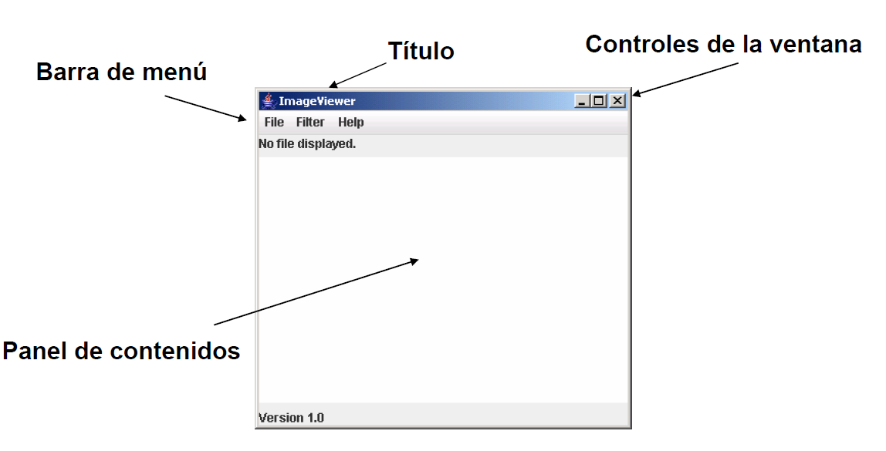
La GUI es una interfaz de usuario que permite a los usuarios comunicarse con el ordenador. Suele estar basada en la interacción a través del ratón y el teclado (aunque el control a través de gestos es cada vez más común): al mover el ratón, el puntero se desplaza en la pantalla. La señal del dispositivo se transmite al ordenador, que luego la traduce en un movimiento equivalente en la pantalla. Por ejemplo, si un usuario hace clic en un determinado icono de programa en el menú, se ejecuta la instrucción correspondiente y se abre el programa.
La GUI es, por lo tanto, una especie de traductor en la comunicación entre el humano y la máquina. Sin la GUI, tendrías que utilizar la línea de comandos para llamar a programas y aplicaciones
Qué es el diseño GUI
La interfaz persona-ordenador (IPO) se denomina en inglés human-computer interface (HCI). Tal como vamos a ver a lo largo de la unidad, otros conceptos estrechamente relacionados son arquitectura de la información, usabilidad y diseño de interacción.
El diseño de interfaz de usuario o ingeniería de la interfaz es el resultado de definir la forma, función, utilidad, ergonomía, imagen de marca y otros aspectos que afectan a la apariencia externa de las interfaces de usuario en sistemas de todo tipo (computadoras de uso general, sistemas de control, dispositivos de comunicación móviles, software de sistemas, software de aplicaciones, sitios web, etc.) El diseño de la interfaz de usuario es una disciplina asociada al diseño y se enfoca en maximizar la usabilidad y la experiencia de usuario. El objetivo final del diseño de la interfaz de usuario es hacer que la interacción entre el usuario y el sistema del que es interfaz sea tan simple y eficiente como sea posible, en términos de cumplimiento de los objetivos del usuario. Sigue por ello una filosofía de diseño centrado en el usuario.
Un buen diseño de la interfaz de usuario facilita la compleción de tareas a realizar sin que el usuario vea atraída su atención hacia la forma. El diseño gráfico y la tipografía se combinan para ofrecer usabilidad, influyendo en cómo el usuario realiza ciertas interacciones y mejorando la apariencia estética del diseño; la estética del diseño puede mejorar o dificultar la capacidad de los usuarios para utilizar las funciones de la interfaz. El proceso de diseño debe balancear la funcionalidad técnica y los elementos visuales (es decir, el modelo mental) para crear un sistema que no solo sea operativo, sino también usable y adaptable a la evolución de las necesidades del usuario.
Normalmente el diseño de interfaces de usuario es una actividad multidisciplinar que involucra a varias ramas tales como el diseño gráfico, el diseño industrial, el diseño web, el diseño de software y la ergonomía; y puede aparecer como actividad en un amplio rango de proyectos, desde el desarrollo de sistemas informáticos hasta el desarrollo de aviones comerciales. En este sentido las disciplinas del diseño industrial y diseño gráfico se encargan de que la actividad a desarrollar se comunique y aprenda lo más rápidamente, a través de recursos como los gráficos, los pictogramas, los estereotipos y la simbología, todo sin afectar un funcionamiento técnico eficiente.
Elementos de un Diseño GUI.
- Contenedores. Contienen otros componentes (u otros contenedores) .Estos componentes se tienen que añadir al contenedor y para ciertas operaciones se pueden tratar como un todo. Mediante un gestor de diseño controlan la disposición (layout) de estos componentes en la pantalla.
- Lienzo. Superficie simple de dibujo
- Componentes de interfaz de usuario. Botones, listas, menús, casillas de verificación, campos de texto, etc.
- Componentes de construcción de ventanas. Ventanas, marcos, barras de menús, cuadros de diálogo
La construcción de una GUI utiliza un modelo de programación basado en eventos.
9.2. Diseño dirigido a eventos
En este modelo el orden en el cual se ejecutan las instrucciones de un programa va a quedar determinado por eventos. Un evento es una señal de que algo ha ocurrido. En esta materia consideraremos únicamente eventos generados por acciones del usuario al interactuar con la GUI.
Algunas componentes de una GUI van a ser reactivas, es decir tienen la capacidad de reaccionar ante las acciones del usuario. Una componente reactivo está asociada a un objeto fuente del evento creado por el programador. La reacción del sistema en respuesta a la acción del usuario va a quedar determinada por la clase a la que pertenece un objeto oyente. El objeto oyente está ligado al objeto fuente de evento a través de una instrucción de registro.
Un objeto fuente de evento tienen la capacidad de percibir un evento externo y disparar un evento interno, esto es, crear un objeto evento de software. Este objeto evento de software es el argumento de un mensaje enviado al objeto oyente. El método que se ejecuta en respuesta a este mensaje forma parte de una interface y es implementado por el programador en la clase del oyente.
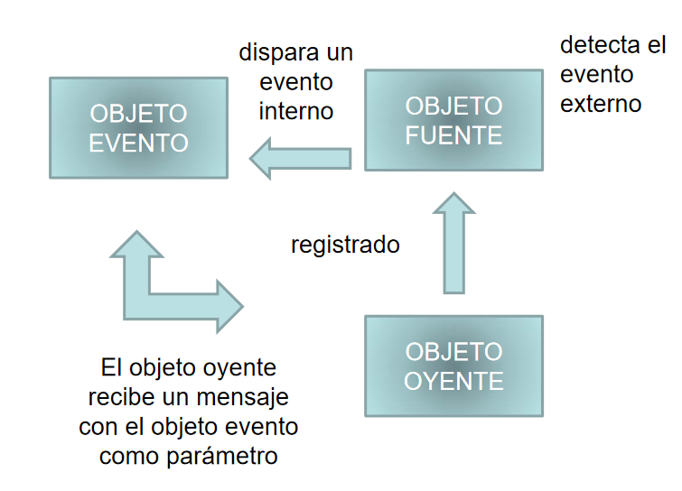
Creación de un GUI
La construcción de una GUI va a requerir:
- Crear objetos de las clases provistas o de las clases derivadas o implementadas.
- Elegir un organizador de espacio (layout) y especificar la apariencia de los componentes.
- Insertar los componentes en los contenedores.
- Crear los manejadores de eventos y asignarlos a los objetos y eventos correspondientes.
- Crear las clases de ayuda y de conexión con los servicios.
9.3. Componentes
Una interfaz gráfica de usuario (GUI) presenta un mecanismo amigable al usuario para interactuar con una aplicación. Las GUIs se crean a partir de componentes de la GUI, a estos se les conoce también como controles o widgets (accesorios de ventana) en otros lenguajes. Un componente de la GUI es un objeto con el cual interactúa el usuario mediante el ratón, el teclado u otra forma de entrada como el reconocimiento de voz que genera un evento que debemos capturar a través de una callback para realizar una tarea. Ejemplos de los posibles controles de una interfaz gráfica.
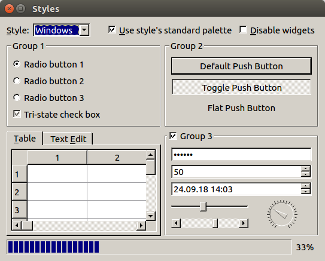
9.4. Librerías
El número de librería gráficas existentes son muchas: GTK, QT, Nativas, WxWidget, etc. Podemos usar cualquiera de ellas y dependiendo de la finalidad de la aplicación son más apropiadas unas u otras. En nuestro caso vamos a ver QT pero también queremos hablar de Tkinter que es muy utilizada para aplicaciones simples.
Tanto Tkinter como PyQt son dos librerías útiles para diseñar interfaces gráficas de usuario, pero al mismo tiempo difieren en términos de adaptabilidad y funcionalidad. La mayoría de las veces, Tkinter se trata de escribir GUI directamente, programar su configuración o funcionalidad en el mismo script. Por otro lado, en PyQt, se separa la interfaz gráfica de usuario en un script y se utiliza el conocimiento de Python de otro script. En lugar de crear su propio código para la interfaz de usuario, puede simplemente adoptar las funciones Qt Designer para desarrollar su aplicación.
Dentro de las librerías dedicadas a QT, tenemos dos aproximaciones PyQT desarrollo independiente y PySide desarrollado por la propia creadora de la librería QT, ambas tienen conceptos similares y se puede utilizar cualquiera, pero no combinar.
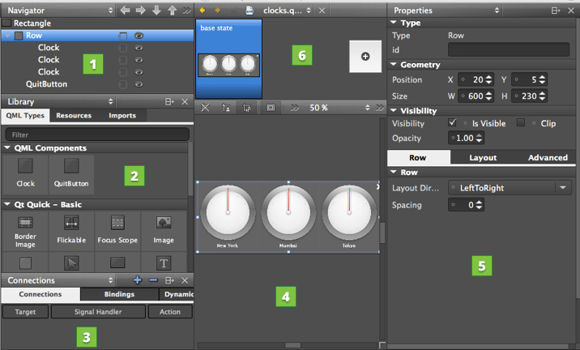
Qt
Ventajas de usar PyQt - PySide
- Flexibilidad de codificación - La programación GUI con Qt está diseñada alrededor del concepto de señales y slots para establecer comunicación entre objetos. Esto permite flexibilidad cuando se trata de eventos GUI y resulta en una base de código más fluida.
- Más que un marco de trabajo - Qt utiliza una amplia gama de APIs de plataformas nativas con el propósito de redes, creación de bases de datos y mucho más. Ofrece acceso primario a ellos a través de una API única.
- Varios componentes de la interfaz de usuario - Qt ofrece varios widgets, como botones o menús, todos ellos diseñados con una apariencia básica en todas las plataformas soportadas.
- Varios recursos de aprendizaje: dado que Qt es uno de los marcos de trabajo de interfaz de usuario más utilizados para Python, puede acceder fácilmente a una amplia gama de documentación.
- Fácil de dominar - Viene con una funcionalidad API sencilla y fácil de usar, junto con clases específicas vinculadas a Qt C++. Esto permite al usuario utilizar conocimientos previos de Qt o C++, haciendo que PyQt sea fácil de entender.
Desventajas de usar Qt
- Requiere mucho tiempo para entender todos los detalles de Qt, lo que significa que es una curva de aprendizaje bastante elevada.
Tkinter
Ventajas de usar Tkinter
- Disponible sin cargo para uso comercial.
- Se presenta en la biblioteca Python subyacente.
- La creación de ejecutables para las aplicaciones de Tkinter es más accesible ya que Tkinter está incluido en Python, y, como consecuencia, no viene con ninguna otra dependencia.
- Simple de entender y dominar, ya que Tkinter es una librería limitada con una API simple, siendo la opción principal para crear interfaces gráficas de usuario rápidas para scripts Python.
Desventajas de usar Tkinter
- Tkinter no incluye widgets avanzados.
- No tiene una herramienta similar a Qt Designer para Tkinter.
- No tiene un aspecto nativo
¿Cuál elegir?
De todos modos, en la mayoría de los casos, la mejor solución es utilizar PyQt - PySide, teniendo en cuenta las ventajas y desventajas de ambos.
La programación GUI con Qt se crea alrededor de señales y ranuras para la comunicación entre objetos. De este modo, permite flexibilidad, mientras que permite al programador acceder a una amplia gama de herramientas.
Tkinter puede ser útil para aquellos que quieren diseñar una GUI fundamental y rápida para scripts Python, pero para un resultado de programación más avanzado, casi todos los programadores optan por las funcionalidades que vienen con PyQt - PySide.
9.5. Programación GUI Básica
Hola mundo
PySide
pip install pyside6
import PySide6.QtCore
# Prints PySide6 version
print(PySide6.__version__)
# Prints the Qt version used to compile PySide6
print(PySide6.QtCore.__version__)
import sys
import random
from PySide6 import QtCore, QtWidgets, QtGui
class MyWidget(QtWidgets.QWidget):
def __init__(self):
super().__init__()
self.hello = ["Hallo Welt", "Hei maailma", "Hola Mundo", "Привет мир"]
self.button = QtWidgets.QPushButton("Click me!")
self.text = QtWidgets.QLabel("Hello World", alignment=QtCore.Qt.AlignCenter)
self.layout = QtWidgets.QVBoxLayout(self)
self.layout.addWidget(self.text)
self.layout.addWidget(self.button)
self.button.clicked.connect(self.magic)
@QtCore.Slot()
def magic(self):
self.text.setText(random.choice(self.hello))
if __name__ == "__main__":
app = QtWidgets.QApplication([])
widget = MyWidget()
widget.resize(800, 600)
widget.show()
sys.exit(app.exec_())
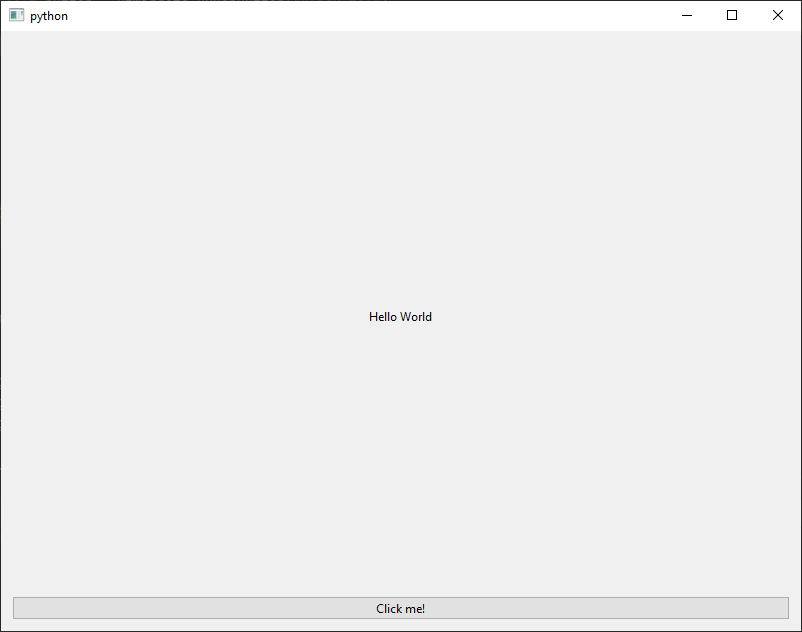
Primero se importan las librerías necesarias, y se pasa a definir una clase MyWidget que definirá la aplicación a ejecutar. En el constructor realizamos toda la tarea de construcción de la ventana y control de eventos de la siguiente manera.
- Llamamos al constructor padre.
- Creamos un atributo con las frases a contener (hello)
- Creamos un botón con el texto “Clic me”.
- Creamos una etiqueta con el texto “Hello Word” centrada
- Creamos una disposición (layout) para contener a los controles.
- Añadimos al layout los controles antes creados (addWidget)
- Conectamos el evento clic del botón con la callback magic definida más adelante.
Para finalizar la clase definimos la callback, en este caso simplemente cambia el texto del propio control a uno de la propiedad hello de forma aleatoria.
9.5.1. Primeros pasos con el GUI
PySide es una biblioteca de Python para crear interfaces gráficas de usuario multiplataforma. Es un enlace de Python al marco Qt. La biblioteca Qt es una de las bibliotecas GUI más poderosas. PySide se implementa como un conjunto de módulos de Python. Estos módulos proporcionan herramientas para trabajar con GUI, multimedia, documentos XML, redes o bases de datos. Trabajaremos con dos de estos módulos. Los módulos QtGui y QtCore.
El módulo QtCore contiene la funcionalidad principal no GUI. Este módulo se utiliza para trabajar con tiempo, archivos y directorios, varios tipos de datos, flujos, URL, tipos de mime, subprocesos o procesos. El módulo QtGui contiene los componentes gráficos y las clases relacionadas. Estos incluyen, por ejemplo, botones, ventanas, barras de estado, barras de herramientas, controles deslizantes, mapas de bits, colores, fuentes, etc. PySide es un conjunto de herramientas de alto nivel.
import sys
from PySide6 import QtWidgets, QtGui
class Example(QtWidgets.QWidget):
def __init__(self):
super().__init__() #Inicializar la clase base
# Establecer la apariencia de la ventana
self.setGeometry(300, 300, 250, 150)
self.setWindowTitle('Icon')
self.setWindowIcon(QtGui.QIcon('web.png'))
def main():
app = QtWidgets.QApplication(sys.argv)
ex = Example()
ex.show()
sys.exit(app.exec_())
if __name__ == '__main__':
main()
Podemos añadir una sugerencia de ayuda a cualquier caja de texto.
import sys
from PySide6 import QtWidgets, QtGui
class Example(QtWidgets.QWidget):
def __init__(self):
super().__init__()
btn = QtWidgets.QPushButton('Button', self)
btn.setToolTip('This is a <b>QPushButton</b> widget')
btn.resize(btn.sizeHint())
btn.move(50, 50)
btn.setToolTip('This is a <b>QWidget</b> widget')
self.setGeometry(300, 300, 250, 150)
self.setWindowTitle('Tooltips')
def main():
app = QtWidgets.QApplication(sys.argv)
ex = Example()
ex.show()
sys.exit(app.exec_())
Cierre de la ventana.
import sys
from PySide6 import QtWidgets, QtCore
class Example(QtWidgets.QWidget):
def __init__(self):
super().__init__()
qbtn = QtWidgets.QPushButton('Quit', self)
qbtn.clicked.connect(
QtCore.QCoreApplication.instance().quit)
qbtn.resize(qbtn.sizeHint())
qbtn.move(50, 50)
self.setGeometry(300, 300, 250, 150)
self.setWindowTitle('Quit button')
def main():
app = QtWidgets.QApplication(sys.argv)
ex = Example()
ex.show()
sys.exit(app.exec_())
if __name__ == '__main__':
main()
Con estos tres ejemplos queremos introducir los conceptos básicos de la programación GUI. En primer lugar, tendremos que crear nuestra ventana extendiendo de QtWidgets.QWidget. Dentro del constructor determinaremos el aspecto de la misma, creando todos los controles que deba tener, así como todas las uniones entre los eventos y las callback correspondientes. A continuación, en la clase, crearemos las callback correspondientes añadiendo el decorador @QtCore.Slot() o usando una acción por defecto del sistema QtCore.QCoreApplication.instance().quit.
Cada control tiene un conjunto de métodos y propiedades que podremos utilizar, también tendrá un conjunto de eventos que va a generar que podemos controlar, pero no es obligatorio implementarlos todos, solo aquellos que necesitemos para nuestra programación.
Controlando eventos de la ventana principal
import sys
from PySide6 import QtWidgets
class Example(QtWidgets.QWidget):
def __init__(self):
super().__init__()
self.setGeometry(300, 300, 250, 150)
self.setWindowTitle('Message box')
def closeEvent(self, event):
reply = QtWidgets.QMessageBox.question(self, 'Message',
"Are you sure to quit?",
QtWidgets.QMessageBox.Yes |
QtWidgets.QMessageBox.No,
QtWidgets.QMessageBox.No)
if reply == QtWidgets.QMessageBox.Yes:
event.accept()
else:
event.ignore()
def main():
app = QtWidgets.QApplication(sys.argv)
ex = Example()
ex.show()
sys.exit(app.exec_())
if __name__ == '__main__':
main()
Al igual que los controles, la ventana principal que definimos tiene eventos que pueden ser capturados. Estos en vez de definir una callback y utilizar el decorador, debemos sobrescribir los correspondientes métodos. En el caso anterior se captura el evento de cierre, se lanza una pregunta al usuario mediante el QMesageBox y en función de la respuesta, se cierra o no la ventana al aceptar el evento (event.accept() o rechazarlo).
9.5.2. Eventos QT
El número de eventos presentes en un entorno GUI es muy numeroso, los siguientes son una pequeña muestra de los que se pueden capturar.
|
Evento |
Descripción |
|
QCloseEvent |
Cierre de una ventana |
|
QContextMenuEvent |
Apertura del menú contextual de un control |
|
QEnterEvent |
Al entrar en un control |
|
QFocusEvent |
Cuando el control coge el foco de texto |
|
QHideEvent |
Cuando se oculta un control |
|
QHoverEvent |
Cuando se pasa el puntero del ratón por encima de un control |
|
QInputEvent |
Cuando el Usuario hace una entrada de texto |
|
QKeyEvent |
Cuando el usuario pulsa una tecla |
|
QMoveEvent |
Cuando se mueve el puntero del ratón |
|
QShowEvent |
Cuando se muestra un control |
|
QClickEvent |
Cuando se hace clic en un elemento |
9.5.2. Elementos de la ventana principal
- La clase QtGui.QMainWindow proporciona una ventana principal de la aplicación. Esto permite crear el esqueleto de la aplicación clásica con una barra de estado, barras de herramientas y una barra de menú.
- La barra de estado es un widget que se utiliza para mostrar información de estado. Para obtener la barra de estado, llamamos al método statusBar() de la clase QtGui.QMainWindow. La primera llamada del método crea una barra de estado. Las llamadas posteriores devuelven el objeto de la barra de estado. ShowMessage() muestra un mensaje en la barra de estado.
- Una barra de menú es una parte común de una aplicación GUI. Es un grupo de comandos ubicados en varios menús. Mientras que en las aplicaciones de consola tenemos que recordar varios comandos y sus opciones, aquí tenemos la mayoría de los comandos agrupados en partes lógicas. Estos son estándares aceptados que reducen aún más la cantidad de tiempo dedicado a aprender una nueva aplicación.
- Los menús agrupan todos los comandos que podemos usar en una aplicación. Las barras de herramientas proporcionan un acceso rápido a los comandos más utilizados.
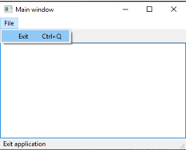
import sys
from PySide6 import QtGui, QtWidgets
class Example(QtWidgets.QMainWindow):
def __init__(self):
super().__init__()
self.initUI()
def initUI(self):
textEdit = QtWidgets.QTextEdit()
self.setCentralWidget(textEdit)
exitAction = QtGui.QAction('Exit', self)
exitAction.setShortcut('Ctrl+Q')
exitAction.setStatusTip('Exit application')
exitAction.triggered.connect(self.close)
self.statusBar()
menubar = self.menuBar()
fileMenu = menubar.addMenu('&File')
fileMenu.addAction(exitAction)
toolbar = self.addToolBar('Exit')
toolbar.addAction(exitAction)
self.setGeometry(300, 300, 350, 250)
self.setWindowTitle('Main window')
def main():
app = QtWidgets.QApplication(sys.argv)
ex = Example()
ex.show()
sys.exit(app.exec_())
if __name__ == '__main__':
main()
El código es muy simple, pero sirve para ejemplificar todos los elementos explicados al comienzo del punto.
- Se crear una Ventana de aplicación al heredar de QMainWindow, en su constructor se crean los elementos de la ventana llamando a initUI.
- Una caja de texto que ocupa toda el área.
- Se crea una acción del sistema (Exit) a la que se le asigna un acelerador de teclado. También cambiará el texto de la barra de estado para indicar el texto: Exit application.
- Se habilita en la ventana la barra de estado.
- Se crea un menú con un único elemento que se enlaza a la acción del sistema creada anteriormente, salir.
- Se crea una barra de herramientas con un único botón para salir, enlazándolo también a la misma acción.
- Se establece el título y el tamaño de la ventana.
- Se crea la aplicación y se muestra.
9.5.3. Eventos y mensajes
Los eventos son una parte importante en cualquier programa de GUI. Los eventos los generan los usuarios o el sistema.
Todas las aplicaciones de GUI están controladas por eventos. Una aplicación reacciona a diferentes tipos de eventos que se generan durante su vida. Los eventos son generados principalmente por el usuario de una aplicación, pero también pueden generarse por otros medios. p.ej. Conexión a Internet, administrador de ventanas, temporizador. En el modelo de eventos, hay tres elementos:
- fuente del evento
- objeto de evento
- objetivo del evento
La fuente del evento es el objeto cuyo estado cambia, genera eventos. El objeto de evento (Evento) encapsula los cambios de estado en el origen del evento. El objetivo del evento es el componente que desea ser notificado. El objeto de origen del evento delega la tarea de manejar un evento al objetivo del evento y este usa la callback para dicha gestión.
Cuando llamamos al método exec_() de la aplicación, la aplicación entra en el ciclo principal. El bucle principal busca eventos y los envía a los objetos. Las señales y las callback se utilizan para la comunicación entre objetos. Se emite una señal cuando ocurre un evento en particular, se llama a una callback cuando se emite una señal conectada a ella.
import sys
from PySide6 import QtCore, QtWidgets
class Example(QtWidgets.QWidget):
def __init__(self):
super().__init__()
self.initUI()
def initUI(self):
lcd = QtWidgets.QLCDNumber(self)
sld = QtWidgets.QSlider(QtCore.Qt.Horizontal, self)
sld.valueChanged.connect(lcd.display)
vbox = QtWidgets.QVBoxLayout()
vbox.addWidget(lcd)
vbox.addWidget(sld)
self.setLayout(vbox)
self.setGeometry(300, 300, 250, 150)
self.setWindowTitle('Signal & slot')
def main():
app = QtWidgets.QApplication(sys.argv)
ex = Example()
ex.show()
sys.exit(app.exec_())
if __name__ == '__main__':
main()
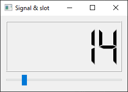
- Creamos un control lcd numérico.
- Creamos un control slider o barra de desplazamiento y conectamos el evento de cambio de la barra (changed) con el de visualización del lcd (display).
- Añadimos un layout, se verá en el siguiente punto y los widget a él.
Las callback puede recoger parámetros, en concreto el objeto evento que se está transmitiendo para poder utilizarlo en su beneficio.
import sys
from PySide6 import QtWidgets
class Example(QtWidgets.QMainWindow):
def __init__(self):
super().__init__()
self.initUI()
def initUI(self):
btn1 = QtWidgets.QPushButton("Button 1", self)
btn1.move(30, 50)
btn2 = QtWidgets.QPushButton("Button 2", self)
btn2.move(150, 50)
btn1.clicked.connect(self.buttonClicked)
btn2.clicked.connect(self.buttonClicked)
self.statusBar()
self.setGeometry(300, 300, 290, 150)
self.setWindowTitle('Event sender')
def buttonClicked(self):
sender = self.sender()
self.statusBar().showMessage(sender.text() + ' was pressed')
def main():
app = QtWidgets.QApplication(sys.argv)
ex = Example()
ex.show()
sys.exit(app.exec_())
if __name__ == '__main__':
main()
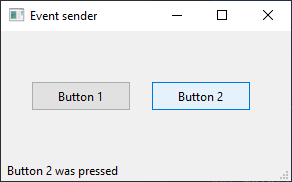
- Creamos dos botones y los posicionamos.
- Conectamos el evento click con la callback buttonClicked en la que se utiliza el método sender() para acceder al control origen, en concreto se cambia el texto de la barra de estado.
9.5.4. Diálogos
Las ventanas de diálogo o los cuadros de diálogo son comunes en las aplicaciones GUI modernas. En una aplicación informática, un cuadro de diálogo es una ventana que se utiliza para "hablar" con la aplicación. Un cuadro de diálogo se utiliza para ingresar datos, modificar datos, cambiar la configuración de la aplicación, etc. Los cuadros de diálogo son medios importantes de comunicación entre un usuario y un programa.
- El QtGui.QInputDialog proporciona un diálogo de conveniencia simple para obtener un valor único de un usuario. El valor de entrada puede ser una cadena, un número o un elemento de una lista.
- El QtGui.QColorDialog es un diálogo para seleccionar un color.
- El QtGui.QFontDialog es un diálogo para seleccionar una fuente.
- El QtGui.QFileDialog es un diálogo para seleccionar un directorio o fichero tanto para escritura como lectura de un fichero.
import sys
from PySide6 import QtWidgets
class Example(QtWidgets.QWidget):
def __init__(self):
super().__init__()
self.initUI()
def initUI(self):
self.btn = QtWidgets.QPushButton('Dialog', self)
self.btn.move(20, 20)
self.btn.clicked.connect(self.showDialog)
self.le = QtWidgets.QLineEdit(self)
self.le.move(130, 22)
self.setGeometry(300, 300, 290, 150)
self.setWindowTitle('Input dialog')
def showDialog(self):
text, ok = QtWidgets.QInputDialog.getText(self,
'Input Dialog',
'Enter your name:')
if ok:
self.le.setText(str(text))
def main():
app = QtWidgets.QApplication(sys.argv)
ex = Example()
ex.show()
sys.exit(app.exec_())
if __name__ == '__main__':
main()
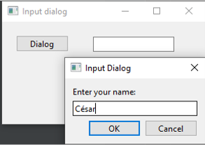
- Creamos un botón para mostrar el diálogo, en el clic del botón se conecta con la callback .showDialog.
- Creamos un control de texto para mostrar el texto introducido por el usuario en el diálogo.
- El manejador del clic, abre el diálogo (QtWidgets.QInputDialog.getText) y recoge tanto el texto (text) como el botón que se ha pulsado (ok).
- Si se ha pulsado el botón ok, se muestra el texto en la caja de texto.
9.5.5. Controles
Los widgets son componentes básicos de una aplicación. El kit de herramientas de programación PySide tiene una amplia gama de controles: botones, casillas de verificación, controles deslizantes, cuadros de lista, etc. Todo lo que un programador necesita para su trabajo.
- QtGui.QCheckBox.
- cb = QtGui.QCheckBox('Show title', self)
- cb.toggle()
- cb.stateChanged.connect(self.changeTitle)
- ToggleButton. PySide no tiene ningún widget para ToggleButton. Para crear un ToggleButton, usamos un QtGui.QPushButton en un modo especial. ToggleButton es un botón que tiene dos estados. Presionado y no presionado. Puede alternar entre estos dos estados haciendo clic en él.
- greenb = QtGui.QPushButton('Green', self)
- greenb.setCheckable(True)
- greenb.clicked[bool].connect(self.setColor)
- QtGui.QSlider. QtGui.QSlider es un widget que tiene un identificador simple. Esta manija se puede tirar hacia adelante y hacia atrás. De esta forma estamos eligiendo un valor para una tarea específica. A veces, usar un control deslizante es más natural que simplemente proporcionar un número o usar un cuadro de giro. QtGui.QLabel muestra texto o imagen.
- sld = QtGui.QSlider(QtCore.Qt.Horizontal, self)
- self.label = QtGui.QLabel(self)
- self.label.setPixmap(QtGui.QPixmap('mute.png'))
- sld.valueChanged[int].connect(self.changeValue)
- QtGui.QProgressBar. Una barra de progreso es un widget que se utiliza cuando procesamos tareas largas. Está animado para que el usuario sepa que nuestra tarea está progresando. El widget QtGui.QProgressBar proporciona una barra de progreso horizontal o vertical. El programador puede establecer los valores mínimo y máximo para la barra de progreso. Los valores predeterminados son 0, 99.
- self.pbar = QtGui.QProgressBar(self)
- self.timer = QtCore.QBasicTimer()
- self.timer.start(100, self)
- QtGui.QCalendarWidget. El QtGui.QCalendarWidget proporciona un widget de calendario mensual. Permite al usuario seleccionar una fecha de forma sencilla e intuitiva.
- self.cal = QtGui.QCalendarWidget(self)
- cal.clicked[QtCore.QDate].connect(self.showDate)
- def showDate(self, date):
- self.lbl.setText(date.toString())
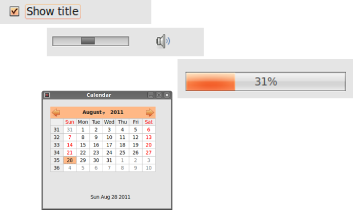
9.5.6. Controles avanzados
- QtGui.QPixmap. QtGui.QPixmap es uno de los widgets que se utilizan para trabajar con imágenes. Está optimizado para mostrar imágenes en pantalla.
- o pixmap = QtGui.QPixmap("redrock.png")
- o lbl = QtGui.QLabel(self)
- o lbl.setPixmap(pixmap)
- QtGui.QLineEdit. QtGui.QLineEdit es un widget que permite ingresar y editar una sola línea de texto plano. Hay funciones de deshacer / rehacer, cortar / pegar y arrastrar y soltar disponibles para el widget QtGui.QLineEdit.
- qle = QtGui.QLineEdit(self)
- qle.textChanged[str].connect(self.onChanged)
- def onChanged(self, text):
- self.lbl.setText(text)
- self.lbl.adjustSize()
- QtGui.QSplitter. QtGui.QSplitter permite al usuario controlar el tamaño de los widgets secundarios arrastrando el límite entre los mismos.
- topleft = QtGui.QFrame(self)
- topleft.setFrameShape(QtGui.QFrame.StyledPanel)
- splitter1 = QtGui.QSplitter(QtCore.Qt.Horizontal)
- splitter1.addWidget(topleft)
- splitter1.addWidget(topright)
- splitter2 = QtGui.QSplitter(QtCore.Qt.Vertical)
- splitter2.addWidget(splitter1)
- QtGui.QApplication.setStyle(QtGui.QStyleFactory.create('Cleanlooks'))
- QtGui.QComboBox. El QtGui.QComboBox es un widget que permite al usuario elegir de una lista de opciones.
- combo = QtGui.QComboBox(self)
- combo.addItem("Ubuntu")
- combo.addItem("Mandriva")
- combo.addItem("Fedora")
- combo.addItem("Red Hat")
- combo.addItem("Gentoo")
- combo.activated[str].connect(self.onActivated)
- def onActivated(self, text):
- self.lbl.setText(text)
- self.lbl.adjustSize()
9.5.7. Layouts
Lo importante en la programación de GUI es la gestión del diseño. La gestión del diseño es la forma en que colocamos los widgets en la ventana. La gestión se puede realizar de dos formas. Podemos utilizar clases de diseño o posicionamiento absoluto.
Absoluto
Con este mecanismo, el programador especifica la posición y el tamaño de cada widget en píxeles. Cuando utiliza el posicionamiento absoluto, debe comprender varias cosas.
- El tamaño y la posición de un widget no cambian si cambiamos el tamaño de una ventana
- Las aplicaciones pueden verse diferentes en varias plataformas
- Cambiar las fuentes en nuestra aplicación podría estropear el diseño
- Si decidimos cambiar nuestro diseño, debemos rehacer completamente nuestro diseño, lo cual es tedioso y requiere mucho tiempo.
Simplemente llamamos al método move() para posicionar nuestros widgets. Los posicionamos proporcionando las coordenadas x e y. El comienzo del sistema de coordenadas está en la esquina superior izquierda. Los valores de x crecen de izquierda a derecha. Los valores de y crecen de arriba a abajo.
Box Layout
La gestión del diseño con clases de diseño es mucho más flexible y práctica. Es la forma preferida de colocar widgets en una ventana. Las clases de diseño básicas son QtGui.QHBoxLayout y QtGui.QVBoxLayout. Alinean los widgets horizontal y verticalmente.
Imagina que quisiéramos colocar dos botones en la esquina inferior derecha. Para crear tal diseño, usaremos un cuadro horizontal y uno vertical. Para crear el espacio necesario, agregaremos un factor de estiramiento.
import sys
from PySide6 import QtWidgets
class Example(QtWidgets.QWidget):
def __init__(self):
super().__init__()
self.initUI()
def initUI(self):
okButton = QtWidgets.QPushButton("OK")
cancelButton = QtWidgets.QPushButton("Cancel")
hbox = QtWidgets.QHBoxLayout()
hbox.addStretch(1)
hbox.addWidget(okButton)
hbox.addWidget(cancelButton)
vbox = QtWidgets.QVBoxLayout()
vbox.addStretch(1)
vbox.addLayout(hbox)
self.setLayout(vbox)
self.setGeometry(300, 300, 300, 150)
self.setWindowTitle('Buttons')
def main():
app = QtWidgets.QApplication(sys.argv)
ex = Example()
ex.show()
sys.exit(app.exec_())
if __name__ == '__main__':
main()
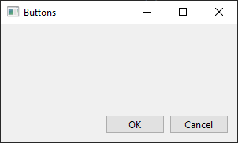
Grid layout
La clase de diseño más universal en PySide es el diseño de cuadrícula. Este diseño divide el espacio en filas y columnas. Para crear un diseño de cuadrícula, usamos la clase QtGui.QGridLayout.
import sys
from PySide6 import QtWidgets
class Example(QtWidgets.QWidget):
def __init__(self):
super().__init__()
self.initUI()
def initUI(self):
names = ['Cls', 'Bck', '', 'Close', '7', '8', '9', '/',
'4', '5', '6', '*', '1', '2', '3', '-',
'0', '.', '=', '+']
grid = QtWidgets.QGridLayout()
j = 0
pos = [(0, 0), (0, 1), (0, 2), (0, 3),
(1, 0), (1, 1), (1, 2), (1, 3),
(2, 0), (2, 1), (2, 2), (2, 3),
(3, 0), (3, 1), (3, 2), (3, 3),
(4, 0), (4, 1), (4, 2), (4, 3)]
for i in names:
button = QtWidgets.QPushButton(i)
if j == 2:
grid.addWidget(QtWidgets.QLabel(''), 0, 2)
else:
grid.addWidget(button, pos[j][0], pos[j][1])
j = j + 1
self.setLayout(grid)
self.move(300, 150)
self.setWindowTitle('Calculator')
def main():
app = QtWidgets.QApplication(sys.argv)
ex = Example()
ex.show()
sys.exit(app.exec_())
if __name__ == '__main__':
main()
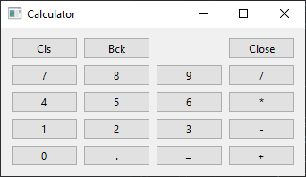
9.5.8. Ejemplo
import sys
from PySide6 import QtWidgets
class Example(QtWidgets.QWidget):
def __init__(self):
super().__init__()
self.initUI()
def initUI(self):
title = QtWidgets.QLabel('Title')
author = QtWidgets.QLabel('Author')
review = QtWidgets.QLabel('Review')
titleEdit = QtWidgets.QLineEdit()
authorEdit = QtWidgets.QLineEdit()
reviewEdit = QtWidgets.QTextEdit()
grid = QtWidgets.QGridLayout()
grid.setSpacing(10)
grid.addWidget(title, 1, 0)
grid.addWidget(titleEdit, 1, 1)
grid.addWidget(author, 2, 0)
grid.addWidget(authorEdit, 2, 1)
grid.addWidget(review, 3, 0)
grid.addWidget(reviewEdit, 3, 1, 5, 1)
self.setLayout(grid)
self.setGeometry(300, 300, 350, 300)
self.setWindowTitle('Review')
def main():
app = QtWidgets.QApplication(sys.argv)
ex = Example()
ex.show()
sys.exit(app.exec_())
if __name__ == '__main__':
main()
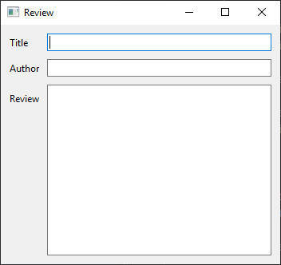
9.5.9. Otros recursos
Para saber más
En este capítulo hemos dado una pequeña introducción al diseño GUI, no pretende ser exhaustiva ni completa, simplemente avanzar los conceptos principales de este tipo de programación, como son el diseño orientado a eventos, la creación de GIU a través de controles y las callbacks y su uso. Podemos acceder a la mayoría de ejemplos en la siguiente dirección.
https://zetcode.com/gui/pysidetutorial/
9.6. Ejercicios
Caso práctico
Ejercicio 1 – ¿Par o impar?
Aplicación gráfica que permita introducir un número entero y luego saber si dicho número es par o impar. Utiliza un QLineEdit para introducir el valor, un QLabel para una etiqueta para anterior al QLineEdit, se determinará en el cambio del contenido de QLineEdit y un QLabel para mostrar “PAR” o “IMPAR” según el caso..
Ejercicio 2 – Mini calculadora I
Aplicación gráfica que permita introducir dos números reales y calcular el resultado de su suma, resta, multiplicación o división. Utiliza un QButton distinto para cada operación y un único QLabel para mostrar el resultado.
Ejercicio 3 – Mini calculadora II
Aplicación gráfica que permite introducir dos números enteros (A y B) y permita realizar tres cálculos distintos: sumatorio de A a B, productorio de A a B y exponencial A^B (A elevado a B). Utiliza tres QRadioButtom (uno para cada cálculo) y un botón “¡Calcula!”.
Ejercicio 4 – Validar letra NIF
Aplicación gráfica que permita introducir un NIF (8 números y una letra utilizando un QLineEdit) e indique si la letra de dicho NIF es válida. Más información en este enlace:
http://www.interior.gob.es/web/servicios-al-ciudadano/dni/calculo-del-digito-de-control-del-nif-nie
Ejercicio 5– Número aleatorio
Aplicación gráfica que permita obtener un número aleatorio cada vez que se pulse un botón. Deberá incluir un QSlider entre 1 y 100 que permita al usuario elegir el valor máximo del número aleatorio a generar. Así, por ejemplo, si el usuario pone el slider a 25, cada vez que le dé al botón se mostrará un número aleatorio entre 0 y 25.
Ejercicio 6 – Dados de Rol
Aplicación gráfica que permita al usuario simular que lanza un dado de juegos de rol. Podrá elegir entre dado de 6 caras (de 1 a 6), dado de 8 caras (de 1 a 8), dado de 10 caras (de 1 a 10), dado de 12 caras (de 1 a 12) y dado de 20 caras (de 1 a 20). Utiliza un botón distinto para cada tipo de dado. Muestra en cada botón una imagen de cada dado. Puedes encontrar las imágenes fácilmente haciendo una búsqueda en Internet.
Ejercicio 7 – Tablas de multiplicar
Aplicación gráfica que muestre las tablas de multiplicar del 1 al 10. Utiliza un QTable de 10 filas por 10 columnas y muestra los valores de cada tabla de multiplicar en una fila distinta.
Extra 1: Inserta los valores en la tabla en tiempo de ejecución, por ejemplo al presionar un botón.
Extra 2: Añade dos campos de texto A y B para que el usuario pueda introducir dos números enteros y se muestren todas las tablas de multiplicar desde A hasta B. Ten en cuenta que el número de filas es variable.
Ejercicio 8 – Inicio de sesión
Aplicación gráfica que simule una ventana de inicio de sesión y registro de usuarios. El usuario podrá introducir su nombre de usuario, contraseña y apretar un botón de “Iniciar sesión”. Muestra el resultado del intento de inicio de sesión en un MenssageBox.
Los usuarios registrados y sus contraseñas estarán en el archivo ‘users.txt’. Crea unos pocos usuarios de ejemplo para probar la aplicación. No está permitido utilizar espacios ni en los nombres de usuario ni en las contraseñas.
9.6.1. Ejercicio 1
import sys
from PySide6 import QtWidgets, QtCore
"""
Aplicación gráfica que permita introducir un número entero y luego saber si dicho número es par o impar.
Utiliza un QLineEdit para introducir el valor, un QLabel para una etiqueta para anterior al QLineEdit,
se determinará en el cambio del contenido de QLineEdit y un QLabel para mostrar “PAR” o “IMPAR” según el caso.
"""
class Example(QtWidgets.QWidget):
def __init__(self):
super().__init__()
self.label_numero = QtWidgets.QLabel('Número')
self.numero = QtWidgets.QLineEdit()
self.numero.textChanged.connect(self.value_changed)
self.label_resultado = QtWidgets.QLabel('Par / Impar')
self.grid = QtWidgets.QGridLayout()
self.grid.setSpacing(10)
self.grid.addWidget(self.label_numero, 1, 0)
self.grid.addWidget(self.numero, 1, 1)
self.grid.addWidget(self.label_resultado, 2, 0, 2, 0, QtCore.Qt.AlignCenter)
self.setLayout(self.grid)
self.setGeometry(300, 300, 300, 100)
self.setWindowTitle('Par o impar')
def value_changed(self):
try:
value = int(self.sender().text())
except ValueError:
value = 0
texto_resultado = "Par" if value % 2 == 0 else "Impar"
self.label_resultado.setText(texto_resultado)
def main():
app = QtWidgets.QApplication(sys.argv)
ex = Example()
ex.show()
sys.exit(app.exec_())
if __name__ == '__main__':
main()
9.6.2. Ejercicio 2
import sys
from PySide6 import QtWidgets, QtCore
"""
Aplicación gráfica que permita introducir dos números reales y calcular el resultado de su suma, resta,
multiplicación o división. Utiliza un QButton distinto para cada operación y un único QLabel para mostrar el resultado.
"""
class Example(QtWidgets.QWidget):
def __init__(self):
super().__init__()
self.grid = QtWidgets.QGridLayout()
self.grid.setSpacing(10)
label_numero_uno = QtWidgets.QLabel("Primer Número")
self.numero_uno = QtWidgets.QLineEdit()
label_numero_dos = QtWidgets.QLabel("Segundo Número")
self.numero_dos = QtWidgets.QLineEdit()
self.resultado = QtWidgets.QLabel(" - - ")
self.sumar = QtWidgets.QPushButton("+")
self.restar = QtWidgets.QPushButton("-")
self.multiplicar = QtWidgets.QPushButton("*")
self.dividir = QtWidgets.QPushButton("/")
self.sumar.clicked.connect(self.boton_click)
self.restar.clicked.connect(self.boton_click)
self.multiplicar.clicked.connect(self.boton_click)
self.dividir.clicked.connect(self.boton_click)
self.grid.addWidget(label_numero_uno, 0, 0, 1, 2)
self.grid.addWidget(label_numero_dos, 0, 2, 1, 2)
self.grid.addWidget(self.numero_uno, 1, 0, 1, 2)
self.grid.addWidget(self.numero_dos, 1, 2, 1, 2)
self.grid.addWidget(self.sumar, 2, 0)
self.grid.addWidget(self.restar, 2, 1)
self.grid.addWidget(self.multiplicar, 2, 2)
self.grid.addWidget(self.dividir, 2, 3)
self.grid.addWidget(self.resultado, 3, 0, 1, 4, QtCore.Qt.AlignCenter)
self.setLayout(self.grid)
self.setGeometry(300, 300, 300, 100)
self.setWindowTitle('Calculadora')
def boton_click(self):
operacion = self.sender().text()
valor = "ERROR"
try:
if operacion == '+':
valor = int(self.numero_uno.text()) + int(self.numero_dos.text())
elif operacion == '-':
valor = int(self.numero_uno.text()) - int(self.numero_dos.text())
elif operacion == '*':
valor = int(self.numero_uno.text()) * int(self.numero_dos.text())
elif operacion == '/':
valor = int(self.numero_uno.text()) / int(self.numero_dos.text())
except ValueError:
valor = "ERROR"
self.resultado.setText(str(valor))
def main():
app = QtWidgets.QApplication(sys.argv)
ex = Example()
ex.show()
sys.exit(app.exec_())
if __name__ == '__main__':
main()
9.6.3. Ejercicio 3
import sys
from PySide6 import QtWidgets, QtCore
"""
Aplicación gráfica que permite introducir dos números enteros (A y B) y permita realizar tres cálculos distintos:
sumatorio de A a B, productorio de A a B y exponencial A^B (A elevado a B).
Utiliza tres QRadioButtom (uno para cada cálculo) y un botón “¡Calcula!”.
"""
class Example(QtWidgets.QWidget):
def __init__(self):
super().__init__()
self.grid = QtWidgets.QGridLayout()
self.grid.setSpacing(10)
label_numero_uno = QtWidgets.QLabel("Primer Número")
self.numero_uno = QtWidgets.QLineEdit()
label_numero_dos = QtWidgets.QLabel("Segundo Número")
self.numero_dos = QtWidgets.QLineEdit()
self.resultado = QtWidgets.QLabel(" - - ")
self.sumatorio = QtWidgets.QRadioButton("Sumatorio")
self.sumatorio.setChecked(True)
self.productorio = QtWidgets.QRadioButton("Productorio")
self.exponencial = QtWidgets.QRadioButton("Exponencial")
self.calcular = QtWidgets.QPushButton("Calcular")
self.calcular.clicked.connect(self.boton_click)
self.resultado = QtWidgets.QLabel(" - - ")
self.grid.addWidget(label_numero_uno, 0, 0, 1, 2)
self.grid.addWidget(label_numero_dos, 0, 2, 1, 2)
self.grid.addWidget(self.numero_uno, 1, 0, 1, 2)
self.grid.addWidget(self.numero_dos, 1, 2, 1, 2)
self.grid.addWidget(self.sumatorio, 2, 0)
self.grid.addWidget(self.productorio, 2, 1)
self.grid.addWidget(self.exponencial, 2, 2)
self.grid.addWidget(self.calcular, 2, 3)
self.grid.addWidget(self.resultado, 3, 0, 1, 4, QtCore.Qt.AlignCenter)
self.setLayout(self.grid)
self.setGeometry(300, 300, 300, 100)
self.setWindowTitle('Calculadora')
def boton_click(self):
try:
if self.sumatorio.isChecked():
valor = int(self.numero_uno.text()) + int(self.numero_dos.text())
elif self.productorio.isChecked():
valor = int(self.numero_uno.text()) * int(self.numero_dos.text())
elif self.exponencial.isChecked():
valor = int(self.numero_uno.text()) ** int(self.numero_dos.text())
except ValueError:
valor = "ERROR"
self.resultado.setText(str(valor))
def main():
app = QtWidgets.QApplication(sys.argv)
ex = Example()
ex.show()
sys.exit(app.exec_())
if __name__ == '__main__':
main()
9.6.4. Ejercicio 4
import sys
from PySide6 import QtWidgets, QtCore
"""
Aplicación gráfica que permita introducir un NIF (8 números y una letra utilizando un QLineEdit)
e indique si la letra de dicho NIF es válida. Más información en este enlace:
http://www.interior.gob.es/web/servicios-al-ciudadano/dni/calculo-del-digito-de-control-del-nif-nie
"""
class Example(QtWidgets.QWidget):
def __init__(self):
self.letras = ("T", "R", "W", "A", "G", "M", "Y", "F", "P", "D", "X", "B",
"N", "J", "Z", "S", "Q", "V", "H", "L", "C", "K", "E")
super().__init__()
self.label_numero = QtWidgets.QLabel('DNI')
self.numero = QtWidgets.QLineEdit()
self.numero.textChanged.connect(self.value_changed)
self.label_resultado = QtWidgets.QLabel('Correcto / Incorrecto')
self.grid = QtWidgets.QGridLayout()
self.grid.setSpacing(10)
self.grid.addWidget(self.label_numero, 1, 0)
self.grid.addWidget(self.numero, 1, 1)
self.grid.addWidget(self.label_resultado, 2, 0, 2, 0, QtCore.Qt.AlignCenter)
self.setLayout(self.grid)
self.setGeometry(300, 300, 300, 100)
self.setWindowTitle('Cáclulo DNI')
def value_changed(self):
texto_resultado = "ERROR"
try:
numero, letra = int(self.sender().text()[:-1]), self.sender().text()[-1:].upper()
texto_resultado = "Correcto" if self.letras[numero % 23] == letra else "Incorrecto"
except ValueError:
pass
self.label_resultado.setText(texto_resultado)
def main():
app = QtWidgets.QApplication(sys.argv)
ex = Example()
ex.show()
sys.exit(app.exec_())
if __name__ == '__main__':
main()
9.6.5. Ejercicio 5
import sys
from PySide6 import QtWidgets, QtCore
from random import randint
"""
Aplicación gráfica que permita obtener un número aleatorio cada vez que se pulse un botón.
Deberá incluir un QSlider entre 1 y 100 que permita al usuario elegir el valor máximo del número aleatorio a login.
Así, por ejemplo, si el usuario pone el slider a 25, cada vez que le dé al botón se mostrará un número aleatorio
entre 0 y 25.
"""
class Example(QtWidgets.QWidget):
def __init__(self):
super().__init__()
self.label_numero = QtWidgets.QLabel('Valor Máximo: 1')
self.maximo = QtWidgets.QSlider(QtCore.Qt.Horizontal)
self.generar = QtWidgets.QPushButton("Generar")
self.label_resultado = QtWidgets.QLabel('Correcto / Incorrecto')
self.generar.clicked.connect(self.boton_click)
self.maximo.valueChanged.connect(self.maximo_changed)
self.grid = QtWidgets.QGridLayout()
self.grid.setSpacing(10)
self.grid.addWidget(self.label_numero, 1, 0)
self.grid.addWidget(self.maximo, 2, 0)
self.grid.addWidget(self.generar, 3, 0)
self.grid.addWidget(self.label_resultado, 4, 0)
self.setLayout(self.grid)
self.setGeometry(300, 300, 300, 100)
self.setWindowTitle('Aleatorio')
def boton_click(self):
valor = randint(1, self.maximo.value() + 1)
self.label_resultado.setText(str(valor))
def maximo_changed(self):
self.label_numero.setText("Valor Máximo: " + str(self.sender().value() + 1))
def main():
app = QtWidgets.QApplication(sys.argv)
ex = Example()
ex.show()
sys.exit(app.exec_())
if __name__ == '__main__':
main()
9.6.6. Ejercicio 6
import sys
from PySide6 import QtWidgets, QtCore, QtGui
from random import randint
"""
Aplicación gráfica que permita al usuario simular que lanza un dado de juegos de rol.
Podrá elegir entre dado de 6 caras (de 1 a 6), dado de 8 caras (de 1 a 8), dado de 10 caras (de 1 a 10),
dado de 12 caras (de 1 a 12) y dado de 20 caras (de 1 a 20).
Utiliza un botón distinto para cada tipo de dado. Muestra en cada botón una imagen de cada dado.
Puedes encontrar las imágenes fácilmente haciendo una búsqueda en Internet.
"""
class Example(QtWidgets.QWidget):
def __init__(self):
super().__init__()
self.boton_6 = QtWidgets.QPushButton()
self.boton_6.setIcon(QtGui.QIcon("icons/6c.png"))
self.boton_6.setIconSize(QtCore.QSize(65, 65))
self.boton_8 = QtWidgets.QPushButton()
self.boton_8.setIcon(QtGui.QIcon("icons/8c.png"))
self.boton_8.setIconSize(QtCore.QSize(65, 65))
self.boton_10 = QtWidgets.QPushButton()
self.boton_10.setIcon(QtGui.QIcon("icons/10c.png"))
self.boton_10.setIconSize(QtCore.QSize(65, 65))
self.boton_12 = QtWidgets.QPushButton()
self.boton_12.setIcon(QtGui.QIcon("icons/12c.png"))
self.boton_12.setIconSize(QtCore.QSize(65, 65))
self.boton_20 = QtWidgets.QPushButton()
self.boton_20.setIcon(QtGui.QIcon("icons/20c.png"))
self.boton_20.setIconSize(QtCore.QSize(65, 65))
self.label_resultado = QtWidgets.QLabel('Correcto / Incorrecto')
self.boton_6.clicked.connect(self.boton_click_6)
self.boton_8.clicked.connect(self.boton_click_8)
self.boton_10.clicked.connect(self.boton_click_10)
self.boton_12.clicked.connect(self.boton_click_12)
self.boton_20.clicked.connect(self.boton_click_20)
self.grid = QtWidgets.QGridLayout()
self.grid.setSpacing(10)
self.grid.addWidget(self.boton_6, 1, 0)
self.grid.addWidget(self.boton_8, 1, 1)
self.grid.addWidget(self.boton_10, 1, 2)
self.grid.addWidget(self.boton_12, 1, 3)
self.grid.addWidget(self.boton_20, 1, 4)
self.grid.addWidget(self.label_resultado, 2, 0, 5, 0, QtCore.Qt.AlignCenter)
self.setLayout(self.grid)
self.setGeometry(300, 300, 300, 100)
self.setWindowTitle('Rol')
def boton_click_6(self):
self.label_resultado.setText(str(self.gen_value(6)))
def boton_click_8(self):
self.label_resultado.setText(str(self.gen_value(8)))
def boton_click_10(self):
self.label_resultado.setText(str(self.gen_value(10)))
def boton_click_12(self):
self.label_resultado.setText(str(self.gen_value(12)))
def boton_click_20(self):
self.label_resultado.setText(str(self.gen_value(20)))
def gen_value(self, val: int):
return str(randint(1, val))
def main():
app = QtWidgets.QApplication(sys.argv)
ex = Example()
ex.show()
sys.exit(app.exec_())
if __name__ == '__main__':
main()
9.6.7. Ejercicio 7
import sys
from PySide6 import QtWidgets, QtCore
"""
Aplicación gráfica que muestre las tablas de multiplicar del 1 al 10. Utiliza un QTable de 10 filas por 10 columnas
y muestra los valores de cada tabla de multiplicar en una fila distinta.
Extra 1: Inserta los valores en la tabla en tiempo de ejecución, por ejemplo al presionar un botón.
Extra 2: Añade dos campos de texto A y B para que el usuario pueda introducir dos números enteros
y se muestren todas las tablas de multiplicar desde A hasta B. Ten en cuenta que el número de filas es variable.
"""
class Example(QtWidgets.QWidget):
def __init__(self):
super().__init__()
label_numero_elementos = QtWidgets.QLabel("Número de elmentos")
self.numero_elementos = QtWidgets.QLineEdit()
label_tabla_numero = QtWidgets.QLabel("La tabla del:")
self.tabla_numero = QtWidgets.QLineEdit()
self.generar = QtWidgets.QPushButton("Generar")
self.tabla = QtWidgets.QTableWidget()
self.generar.clicked.connect(self.boton_click)
self.grid = QtWidgets.QGridLayout()
self.grid.setSpacing(10)
self.grid.addWidget(label_numero_elementos, 0, 0, 1, 2)
self.grid.addWidget(label_tabla_numero, 0, 2, 1, 2)
self.grid.addWidget(self.numero_elementos, 1, 0, 1, 2)
self.grid.addWidget(self.tabla_numero, 1, 2, 1, 2)
self.grid.addWidget(self.tabla, 2, 0, 1, 4, QtCore.Qt.AlignCenter)
self.grid.addWidget(self.generar, 3, 0, 1, 4, QtCore.Qt.AlignCenter)
self.setLayout(self.grid)
self.setGeometry(300, 300, 300, 300)
self.setWindowTitle('Tablas Multiplicar')
def boton_click(self):
try:
numero_elementos = int(self.numero_elementos.text())
tabla_del_numero = int(self.tabla_numero.text())
except ValueError:
pass
else:
self.tabla.setRowCount(numero_elementos)
self.tabla.setColumnCount(2)
for valor in range(0, numero_elementos):
self.tabla.setItem(valor, 0, QtWidgets.QTableWidgetItem(f"{tabla_del_numero}*{valor}"))
self.tabla.setItem(valor, 1, QtWidgets.QTableWidgetItem(str(tabla_del_numero * valor)))
self.tabla.horizontalHeader().setStretchLastSection(True)
self.tabla.horizontalHeader().setSectionResizeMode(QtWidgets.QHeaderView.Stretch)
def main():
app = QtWidgets.QApplication(sys.argv)
ex = Example()
ex.show()
sys.exit(app.exec_())
if __name__ == '__main__':
main()
9.6.8. Ejercicio 8
import sys
from PySide6 import QtWidgets, QtCore
"""
Aplicación gráfica que simule una ventana de inicio de sesión y registro de usuarios.
El usuario podrá introducir su nombre de usuario, contraseña y apretar un botón de “Iniciar sesión”.
Muestra el resultado del intento de inicio de sesión en un MenssageBox.
Los usuarios registrados y sus contraseñas estarán en el archivo ‘users.csv’.
Crea unos pocos usuarios de ejemplo para probar la aplicación.
No está permitido utilizar espacios ni en los nombres de usuario ni en las contraseñas.
"""
class Example(QtWidgets.QWidget):
def __init__(self):
super().__init__()
self.usuarios = {}
with open("users.csv", encoding='utf-8') as file:
for f in file.readlines():
nombre, usuario, clave = f[:-1].split(":")
self.usuarios[usuario] = (nombre, clave)
label_usuario = QtWidgets.QLabel("Usuario:")
self.usuario = QtWidgets.QLineEdit()
lable_clave = QtWidgets.QLabel("Clave:")
self.clave = QtWidgets.QLineEdit()
self.login = QtWidgets.QPushButton("Login")
self.login.clicked.connect(self.login_click)
self.grid = QtWidgets.QGridLayout()
self.grid.setSpacing(10)
self.grid.addWidget(label_usuario, 0, 0, 1, 2)
self.grid.addWidget(self.usuario, 0, 1, 1, 2)
self.grid.addWidget(lable_clave, 1, 0, 1, 2)
self.grid.addWidget(self.clave, 1, 1, 1, 2)
self.grid.addWidget(self.login, 3, 0, 1, 3, QtCore.Qt.AlignRight)
self.setLayout(self.grid)
self.setGeometry(300, 300, 300, 100)
self.setWindowTitle('Login al sistema')
def login_click(self):
usuario = self.usuario.text()
clave = self.clave.text()
clave_almacenada = self.usuarios.get(usuario, (False, False))[1]
valida = True if clave_almacenada == clave else False
text_login = "Valida" if valida else "No valida"
mb = QtWidgets.QMessageBox()
mb.setIcon(mb.Icon.Information)
mb.setText("El usuario " + text_login)
mb.setWindowTitle("Login...")
mb.exec_()
def main():
app = QtWidgets.QApplication(sys.argv)
ex = Example()
ex.show()
sys.exit(app.exec_())
if __name__ == '__main__':
main()
user.csv
usu1:a:a
usu2:bb:bb
Obra publicada con Licencia Creative Commons Reconocimiento Compartir igual 4.0